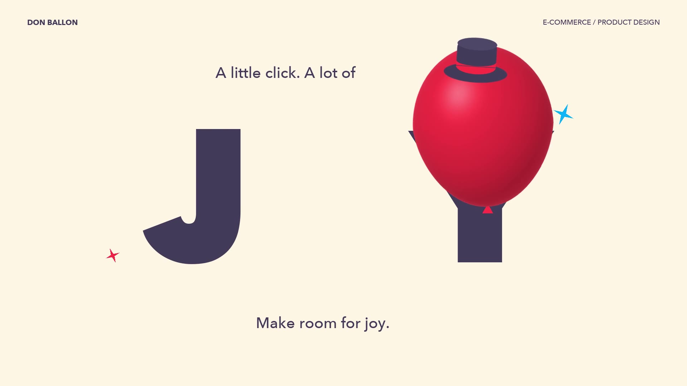
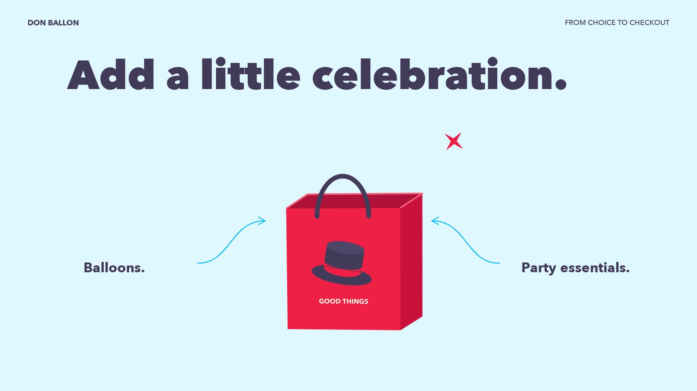
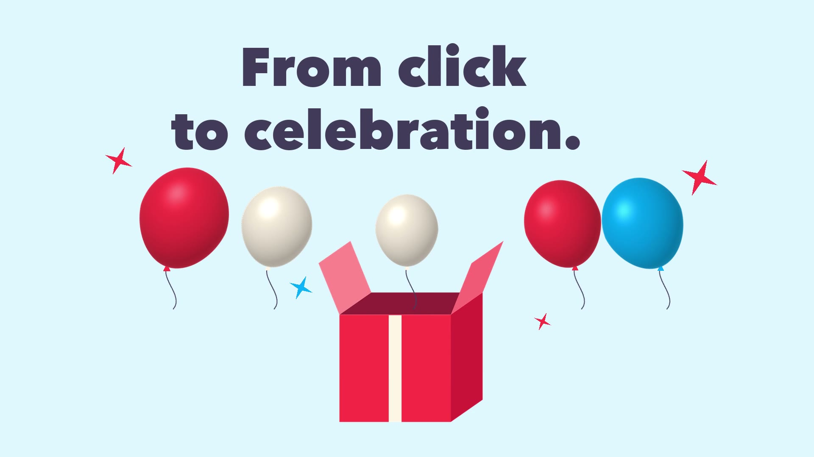

A simpler path from browsing to cart
I redesigned key shopping flows for Don Ballon's online store, removing unnecessary steps before the cart, improving navigation and account screens, and building a UI kit for desktop and mobile.
Improving the store without starting over
Don Ballon sells party supplies through physical stores and an online shop. I focused on improving key shopping flows and bringing consistency to an existing website.
My role
I simplified the path to the cart and redesigned key screens, including sign-in, shopping cart, and personal account. I also built a UI kit and design tokens for desktop and mobile, then worked with developers to review the final implementation.
Behind the shopping experience
Making the store easier to navigate
Don Ballon has a wide product range. I worked on the website structure and navigation to help customers find product sections and move through the store more easily.
Clearer Navigation
I simplified the main navigation and made the catalog a prominent starting point, giving shoppers easier access to product categories.
Design decision
I made the product catalog a prominent entry point in the header, while keeping delivery, payment, and company information in a separate navigation level. This gave shoppers a clear starting point without overcrowding the menu.
Fewer steps from product to cart
I reworked the flow between choosing a product and adding it to the cart, where extra actions made the process longer than necessary.
Shorter Add-to-Cart Flow
I removed unnecessary steps so customers could add products to their cart more directly.
01Discover
Find a relevant product in the catalog.
02Compare
Check attributes, variants, and availability.
03Add to cart
Continue with the chosen configuration.
Making checkout easier to follow
I redesigned the checkout screen, organizing customer details, delivery options, and order information into clear sections.
Clear Order Summary
I grouped prices, discounts, promo codes, and the checkout button in one place so customers could review their total before placing an order.
The shopping journey doesn't end at checkout
I redesigned the sign-in and personal account screens, organizing access to orders, saved items, discounts, and business information.
More than order history
Customers use their accounts for different tasks, from checking orders to accessing business documents.
Keep everything easy to find
Different account sections needed clear navigation without crowding the interface.
Organize around user tasks
I grouped account features into distinct sections with consistent navigation and reusable UI components.
The shopping journey



Shorter paths, more consistent interfaces
I reworked 7 user flows across the store, including removing unnecessary steps before adding products to the cart. I also built a UI kit with 20 reusable components and designed interfaces for both desktop and mobile.
- User flows reworked
- 07
- Reusable UI components
- 20
- Desktop & mobile formats
- 02